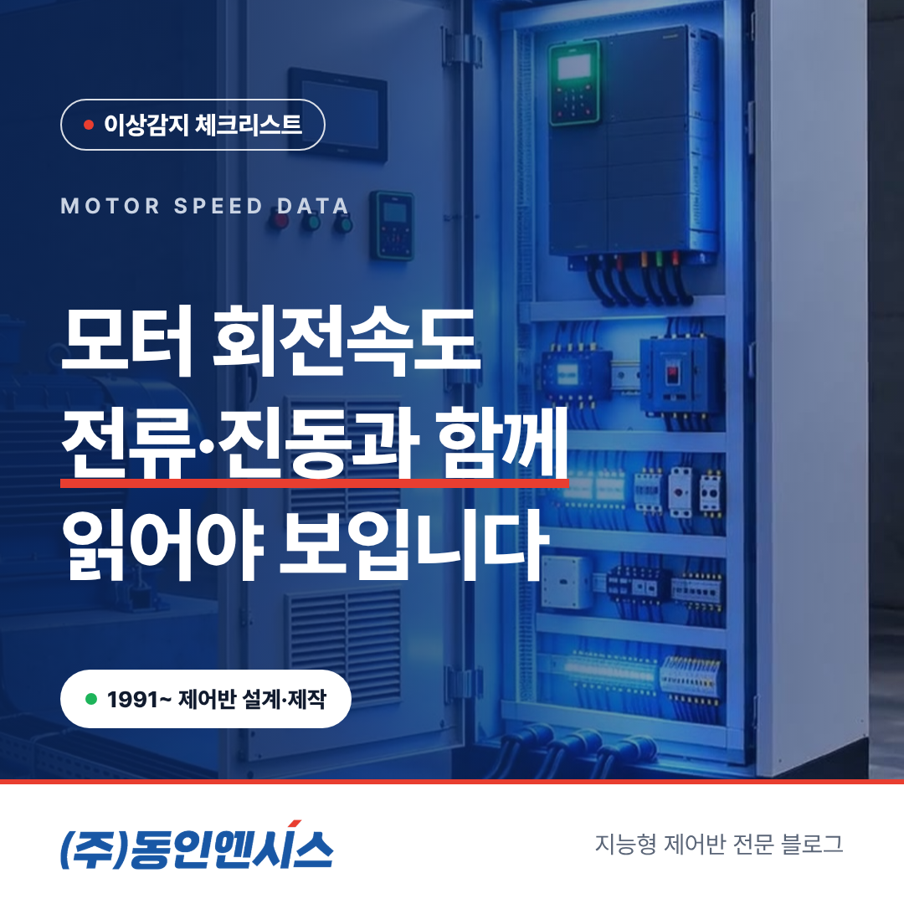
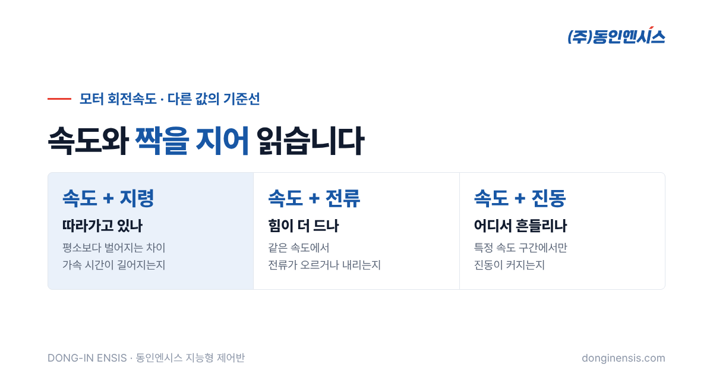
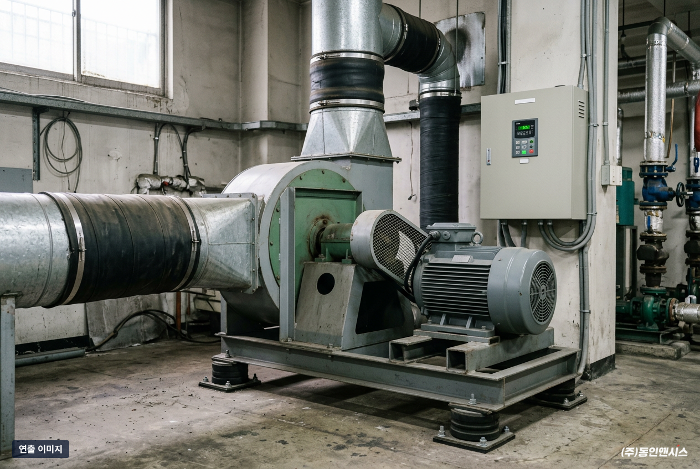
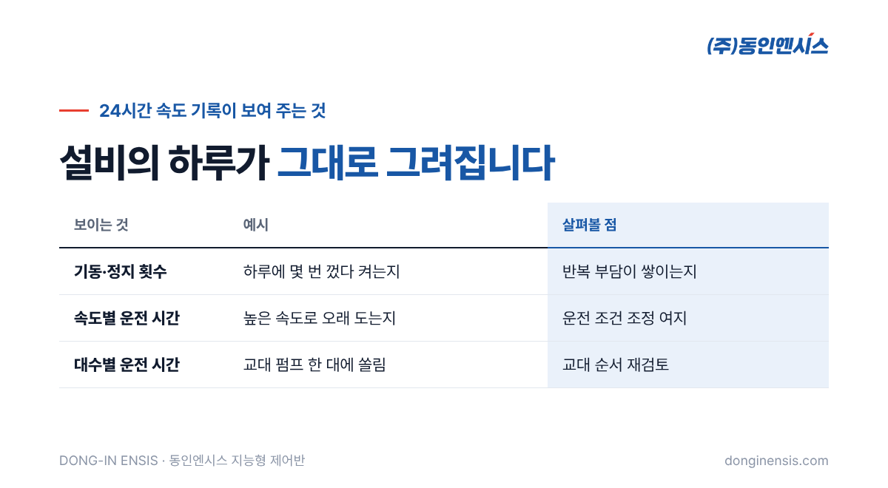
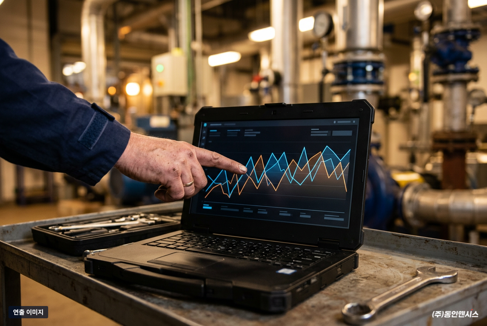

모터가 얼마나 빨리 도는지는 너무 당연해서 오히려 잘 들여다보지 않는 숫자입니다. 하지만 같은 숫자라도 전류, 진동과 나란히 놓으면 설비가 지금 편하게 일하는지, 억지로 버티는지를 알려 주는 단서가 됩니다. 양산과 기장 공장에서 펌프·송풍기·컨베이어용 제어반을 설계·제작해 온 동인엔시스는 지능형 제어반에서 회전속도를 온도, 진동, 전류와 함께 기록합니다. 이 글에서는 모터 회전속도 데이터를 어떻게 읽으면 설비 상태를 더 잘 볼 수 있는지 풀어 봅니다.
온도는 열이 쌓인 결과이고, 진동은 기계적인 흔들림이며, 전류는 모터가 쓰는 힘의 크기입니다. 회전속도는 그 모든 것이 합쳐져 실제로 설비가 얼마나 일하고 있는지를 보여 주는 결과값에 가깝습니다.
예를 들어 펌프의 전류가 올랐다는 사실만으로는 일을 더 많이 해서인지, 어딘가 걸려서 힘이 더 드는 것인지 구분하기 어렵습니다. 이때 회전속도가 함께 있으면 해석이 달라집니다. 속도를 올려서 전류가 오른 것이라면 자연스러운 일이고, 속도는 그대로인데 전류만 올랐다면 설비 쪽 부담을 의심해 볼 수 있습니다.
그래서 회전속도는 혼자보다 다른 값과 짝을 지을 때 쓸모가 커집니다. 다른 값들을 해석하는 '기준선' 역할을 하는 셈입니다. 인버터로 속도를 수시로 바꿔 가며 운전하는 설비일수록 이 기준선이 중요합니다. 속도가 달라질 때마다 전류와 진동도 따라 바뀌기 때문에, 속도 정보 없이 평소와 비교하면 속도 차이 때문에 생긴 변화를 이상으로 착각하기 쉽습니다.

인버터로 돌리는 모터라면 '이 속도로 돌아라'라는 지령값이 있습니다. 평소에는 실제 회전속도가 지령을 잘 따라갑니다. 그런데 부하가 갑자기 무거워지거나 기계적인 저항이 커지면, 지령과 실제 속도 사이에 평소보다 큰 차이가 생길 수 있습니다.
이 차이 자체를 매일 들여다볼 필요는 없습니다. 중요한 것은 평소의 차이가 어느 정도인지 알아 두는 일입니다. 평소보다 벌어지는 날이 늘어난다면, 설비가 같은 일을 하기 위해 더 애를 쓰고 있다는 뜻일 수 있습니다. 기록이 쌓여 있어야 이런 '평소와 다름'을 알아챌 수 있습니다.
가속과 감속에 걸리는 시간도 함께 볼 만합니다. 기동할 때 목표 속도까지 올라가는 데 걸리는 시간이 예전보다 길어졌다면, 그 사이 설비가 더 무거워졌다는 신호일 수 있습니다.
펌프나 송풍기처럼 유체를 움직이는 설비는 대체로 속도가 오를수록 더 많은 힘이 듭니다. 그래서 같은 속도에서 전류가 어느 정도 나오는지가 설비마다 비교적 일정한 편입니다.
이 관계를 기록해 두면 비교가 쉬워집니다. 같은 속도로 돌 때 지난달보다 전류가 눈에 띄게 높다면, 배관이 막혀 가는지, 임펠러에 이물이 붙었는지, 베어링 쪽 저항이 커졌는지 같은 질문을 던져 볼 수 있습니다. 반대로 같은 속도에서 전류가 평소보다 낮다면 물이 제대로 올라오지 않거나 벨트가 미끄러지는 경우를 생각해 볼 수 있습니다.
물론 원인을 숫자 하나로 단정할 수는 없습니다. 다만 '어디부터 볼지'를 정하는 데에는 큰 도움이 됩니다. 현장 점검 시간을 아끼는 첫걸음입니다.
진동은 회전속도에 따라 모양이 달라지는 경우가 많습니다. 평소에는 조용하다가 특정 속도 구간에서만 진동이 커지는 설비가 있습니다. 설비와 받침대, 배관이 그 속도에서 함께 흔들리기 쉬운 성질을 가졌기 때문인 경우가 흔합니다.
진동만 기록하면 '가끔 진동이 크다'는 사실만 남습니다. 회전속도가 같이 있으면 '이 속도 구간에서 진동이 커진다'는 패턴이 보입니다. 그러면 그 구간을 피해서 운전하거나, 받침과 고정 상태를 점검하는 식으로 대응 방향이 분명해집니다. 같은 속도에서 진동이 점점 커지고 있다면 그때는 정렬이나 베어링 쪽을 살펴볼 시점일 수 있습니다. 이런 판단은 진동 값의 크기만으로는 어렵고, 속도와 시간이 함께 남아 있어야 가능합니다.

회전속도를 24시간 기록하면 설비의 하루가 그대로 그려집니다. 언제 기동하고 언제 멈추는지, 하루에 몇 번 껐다 켜는지, 낮은 속도로 오래 도는 시간이 얼마나 되는지가 한눈에 보입니다.
이 정보는 고장 징후와는 또 다른 쓸모가 있습니다. 기동과 정지가 지나치게 잦다면 모터와 기계에 반복적인 부담이 쌓일 수 있으니 운전 방식을 다시 볼 만합니다. 필요 이상으로 높은 속도로 오래 돈다면 운전 조건을 조정할 여지가 있는지 검토해 볼 수 있습니다. 운전 상태신호와 함께 보면 실제로 일한 시간과 멈춰 있던 시간을 나눠 보는 데에도 쓸 수 있습니다.
여러 대를 번갈아 돌리는 펌프라면, 대수별 운전 시간이 한쪽으로 쏠리지 않았는지도 속도 기록으로 확인할 수 있습니다. 한 대만 유독 오래 돌았다면 그 설비의 마모가 먼저 진행될 수 있으니 교대 순서를 다시 볼 만합니다.

동인엔시스 지능형 제어반은 설비를 제어하는 PLC와 인버터가 이미 다루고 있는 운전 값을 그대로 기록에 활용합니다. 회전속도는 모터 권선온도와 베어링 온도, 진동, 전압·전류·전력량, 대기 온습도, 운전 상태신호와 함께 24시간 남습니다. 별도의 수집 장비를 덧붙이지 않고 제어반 한 면이 이 일을 맡습니다.
모인 값은 센서마다 정한 기준과 비교해 정상, 경고, 알람으로 나뉘고, 기간을 정해 이력을 꺼내 보거나 CSV로 내려받을 수도 있습니다. 회전속도와 다른 값을 같은 시간축 위에 겹쳐 보는 일이 그래서 어렵지 않습니다.

Q. 인버터 없이 직입으로 도는 모터도 회전속도를 볼 수 있나요? 현장 조건에 따라 다릅니다. 직입 모터는 속도가 거의 일정하게 유지되는 편이라, 속도보다 전류·진동·온도 쪽 정보가 더 중요할 수 있습니다. 어떤 값을 모을지는 현장 분석 단계에서 설비별로 정합니다.
Q. 모터 회전속도의 알람 기준은 어떻게 정하나요? 설비마다 정상 운전 범위가 달라서, 시운전·안정화 기간에 실제 운전 데이터를 보고 정합니다. 운영하면서 기준을 조정할 수도 있습니다.
Q. 기존 설비에도 적용할 수 있나요? 모터와 펌프 같은 설비는 그대로 두고 제어반을 교체하거나 새로 설치하는 방식입니다. 설비 1~2대로 먼저 시작해 볼 수 있습니다.
모터 회전속도는 단독으로는 평범한 숫자지만, 전류와 진동, 온도를 해석하는 기준선이 되어 줍니다. 지령과 실제 속도의 차이, 같은 속도에서의 전류, 특정 속도에서의 진동, 하루 운전 패턴까지 함께 보면 설비가 보내는 신호를 훨씬 일찍, 더 정확하게 읽을 수 있습니다. 비교할 '평소'는 오늘부터 기록을 쌓아야 생깁니다.
펌프와 송풍기마다 어떤 운전 값을 함께 남기면 좋을지는 현장을 봐야 정확히 말씀드릴 수 있습니다. 동인엔시스의 적용 가능성 진단 신청 페이지에 대상 설비를 적어 주시면 엔지니어가 확인 후 연락드립니다. 전화(051-862-3668)나 메일(dongin@donginmne.com)로 먼저 상담하셔도 됩니다.
아래 질문 중 하나에 실제 경험으로 답해 본문 적당한 곳에 넣어 주세요. 사람이 직접 쓴 문장이 들어가면 네이버에서 저품질 위험이 줄고 노출에 도움이 됩니다.